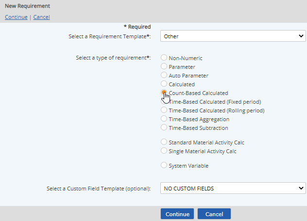
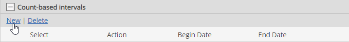
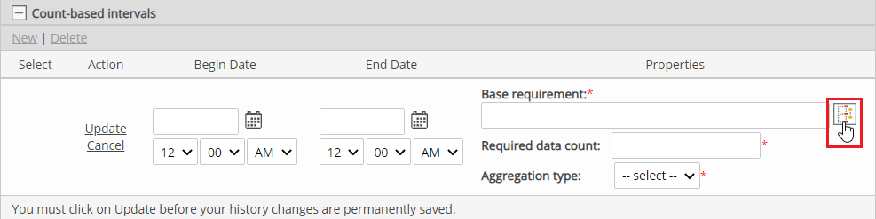

Select Count Based Calculated for the type.

To apply user-defined custom fields, select a Custom Field Template to apply. See Custom Field Templates.
Enter a Name.
You can add translated values for localization by clicking on the language symbol  .
.
In the Requirement Source section you can further define the requirement driver by selecting the Specific Citation and specifying a Periodicity. See Periodicity in Calculated Requirements.
Other optional fields include:
Active Date/Inactive Date: The begin and end dates that a requirement applies (optional)
Description: General description of requirement
UOM: Unit of measure
Precision: Number of places to the right of the decimal point to display
Calculation purpose: Describe what you want to accomplish in the calculation.
Click the plus sign (+) in the Count-based intervals bar to define the calculation. Then click New.

To select the Base Requirement, click the "select" button next to the box.

In the selection window, browse or search to find the requirement to track and click Select.
Required Data Count: Enter the number of data points required to perform the calculation.
Aggregation Type: Select the type from the list. Allowable aggregation types of count based calculations are SUM, VAR, STDEV, MIN and MAX. See Aggregation Types.
Begin Date: Enter date from which the calculation is valid. The value can only be used in other calculations from the Begin Date.
Click Update to save the formula value.
Other options available are:
Expected Frequency: Can be used to produce a data warning if expected data is missing (often used in conjunction with a backend integration system, to warn of possible failures). The expected frequency is defined as the number of data points expected per day. A Begin Date must be set.
Limits: Regulatory and internal limits may be set in order to produce data warning when limits are exceeded. See Setting Regulatory Limits.